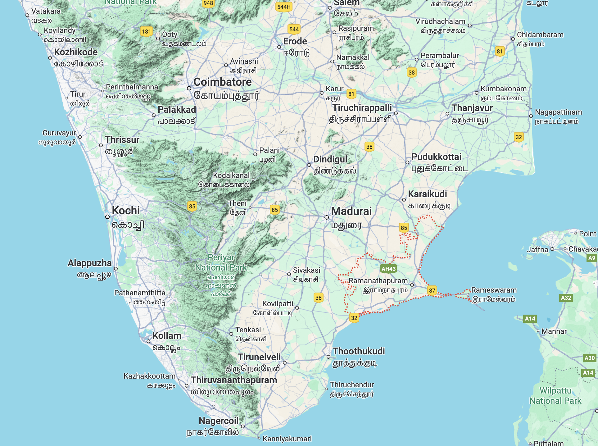
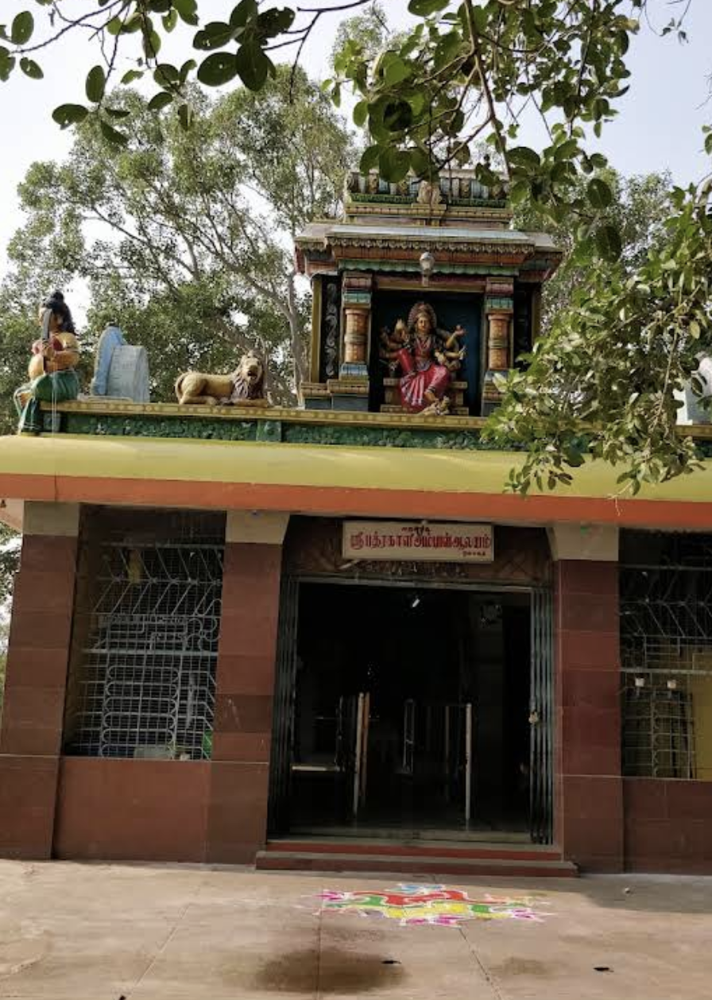
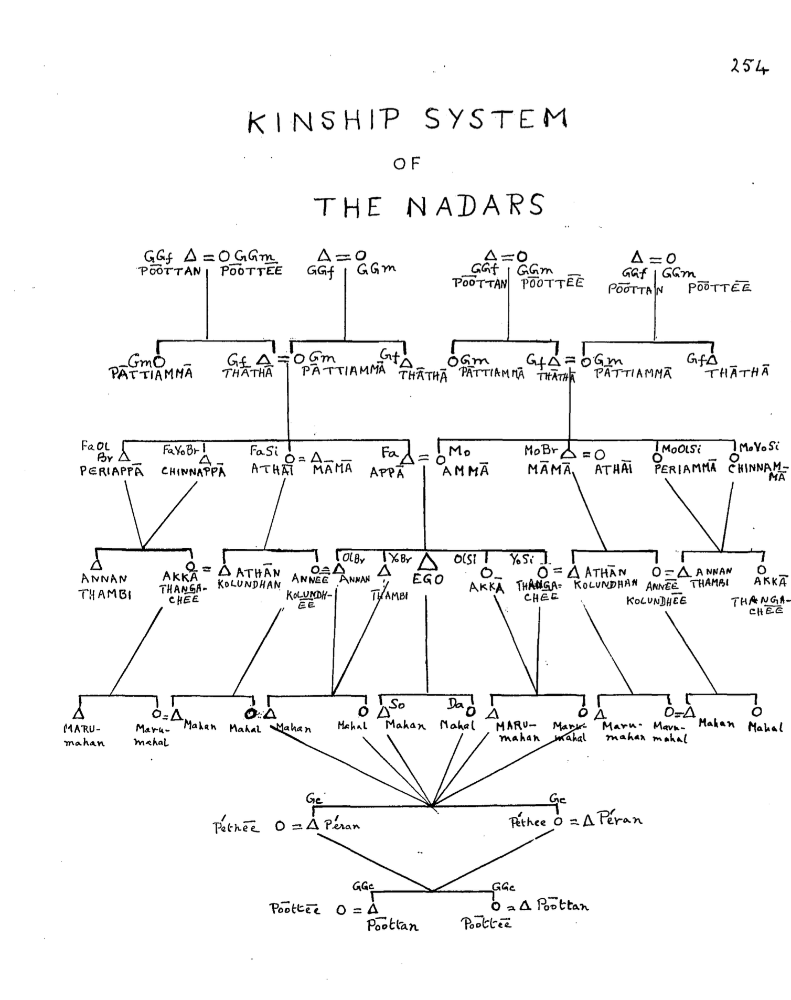
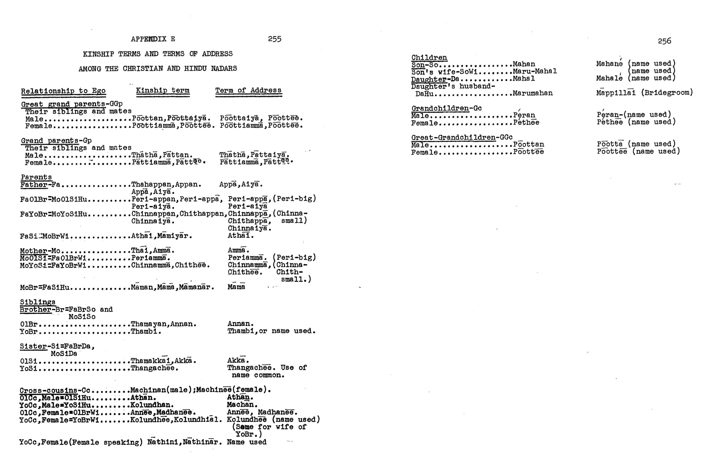
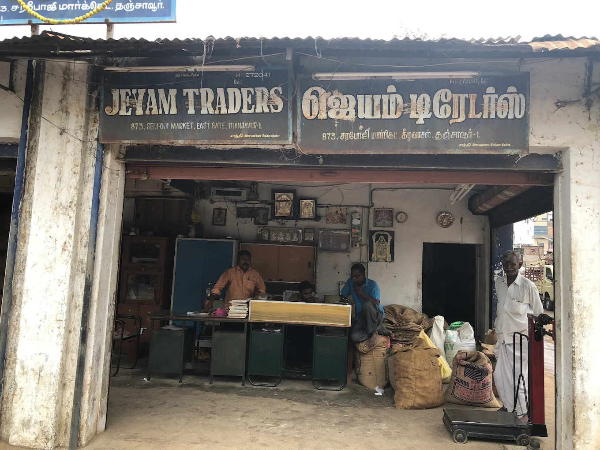
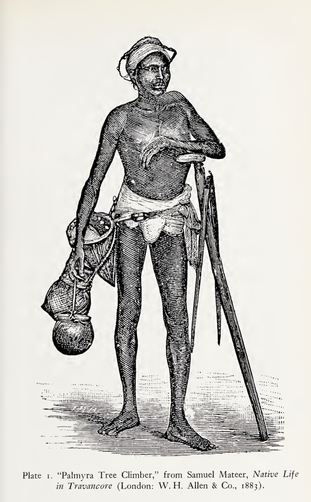
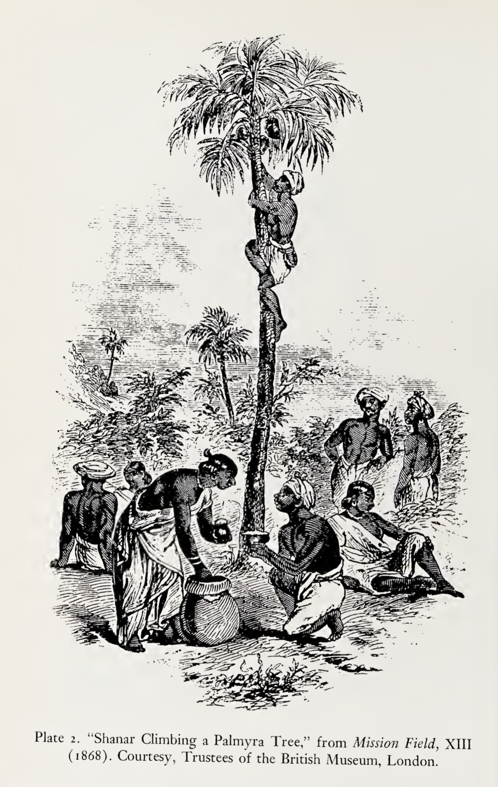
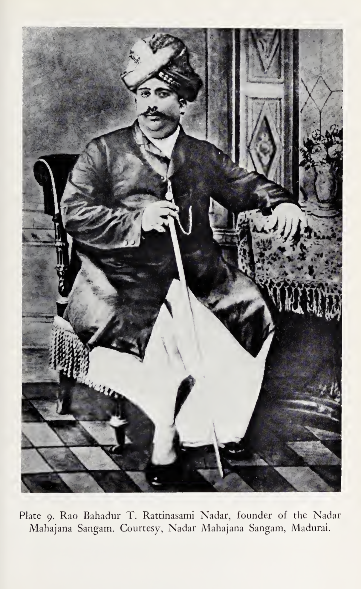
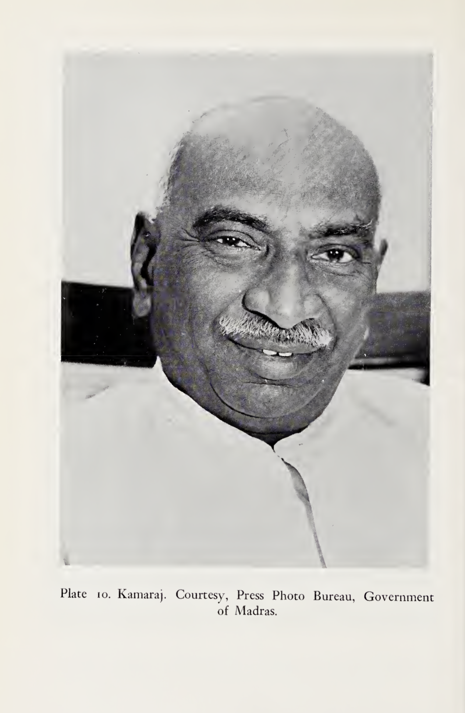

Nadars: From Palm Trees to Entrepreneur & Wealthiest social-groups
Tamil Nadu
Caste
Anthropology
Sociology
Book Review
Entrepreneurship
A detailed ethnographic review of Nadar Castes of Tamil Nadu
Introduction
In this Essay, I cover the Nadars, popular social group and Southern Tamil Nadu.
Firstly, I chose to write about Caste, social-groups, due to central role of caste in an Indian’s life. Caste plays central role in Tamil Politics. Second reason, Nadars are an important social group in Southern Tamil Nadu by numbers. Third reason, their collective story is an example of how marginalized groups can achieve political, social mobility in a society, through collective-efforts.
Once Palm tree climbers, In modern Tamil Nadu; they have built business-enterprises, educational and religious-institutions, even rising to India’s wealthiest. For example, In Tamil-political history, Chief Minister Kamarajar, who holds high esteem among all Tamils is from Southern Tamil Nadu -Virudhunagar, Tamil Nadu. A notable name is HCL founder, Shiv Nadar 1 who is from Moolaipozhi, located in erstwhile, Tirunelveli district.
Caste is a recurring, central topic, to entire India. It’s a lived reality among many, especially Indians who encounter in education, jobs, marriage. Not to mention, where one gets buried, after death is decided by caste in the town of Tirunelveli.
Although, Indians discuss with great lengths, my contention has been that nobody provides a tangible social-solution. Especially given - all Indians having equal rights.
Important
My contributions are as follows
- Describing Geographic advantages for economic opportunities
- Showing endogamy is a structural failure and barrier for progress in Tamil society
- Ethnographical Synthesis of Nadars
- Analyzing Nadar caste’s trajectory and the persistence of caste
- Presenting findings from a functional anthropological approach on Nadars
- Offering comparable analysis with the Kamma Caste among Telugu speakers
- Providing Policy and Social Reflections
Endogamy: A Structural Failure of Tamils
Endogamy i.e the practice of marrying only within same caste is in my opinion a structural failure of Tamil Society. We first explore the popular reasons given for marrying within the same caste. The reasonings are popular among all Nadars, broader Tamils. The popular reasons for Tamils support endogamy, preserving wealth, social-status, habits, customs, trust and fear of shame by their peers.
The most popular reason, marrying within same caste is ensuring family’s physical capital (land, gold, houses), remain within their own clan, marrying the sister’s daughter/son allows the family to retain their own properties. Marrying within the same caste, making sure similiar culture, language is promoted and easier to mix. Many nadars argue for marrying within the same caste, arguing, they can intervene if some issues arises, as trust is higher. Many Tamils argue that majority of societies practiced marrying within their own caste/race, so it’s natural. In this way, marrying within same caste is justified. Many Tamil Parents feel pressured to marry within their caste as they fear, what their friends would think of them or face ostrasization, shamed by relatives, peers.
Issues faced due to this practice:
Marrying within the same caste perpetuates deep structural failures in Tamil society, as it reinforces social divisions, fosters violence and ostracism against inter-caste couples, and denies women personal agency in choosing their partners.
This practice blocks the exchange of knowledge and skills between groups, undermines the rule of law by allowing discrimination to go unpunished, and restricts social mobility and meritocracy, especially for lower castes. In contrast, societies that encourage exogamy tend to see better economic and social outcomes, highlighting how endogamy ultimately stalls both individual advancement and collective progress.
What happens if Tamils marry outside of their caste?
The inter-caste Tamil couples are not spared 2, they face social ostracization, threats of inheritance. There’s documented cases of violence on unborn children3, as the endogamist Tamils believe, the baby has become impure with different caste blood 4.
Pressure on Tamil Women
In Tirunelveli, due to caste identity being strictly practiced; Endogamy creates social closures with strict boundaries. Indirectly, creating pressure for Young Tamil Women in marriage. It creates coercion on women, limiting their own volition for choosing their partner of choice in marriage. This limits their own freedom.
Women feel increasing pressure, coersion as their honor is tied with dowry. Even though, it’s illegal, it’s a social norm. Mostly Tamil Parents, who have daughters do not support dowry, as they are the ones who need to provide. It’s usually a norm among Tamil marriages, the exact data is hard to quantify.
Endogamy also perpetuates dowry-system, practiced among Tamils, even though by law it is made illegal. In dowry-system, strict economic ranking is practiced where financial gifts are matched on both sides An Average Dowry payment is around $6000-$80005 in South-India. This varies across socio-economic lines. Dowry could be form of physical capital, household gifts, financial responsibility of marriage.
Lack of knowledge transfer
Talent, Industriousness is found among all castes in Tamil Society. A talented Tamil’s abilities are limited, as they are forced to be enclosed within their social group or caste. Strict endogamy limits innovation and knowledge transfer, as social groups of diverse talents need to work together to cross-pollinate. Family formation and access to resources, know-how, and physical capital are kept only within the group.
How Endogamy is a structural failure and stopping progress?
Many might say, endogamy exist everywhere in the World, practiced in all societies. Certainly, it has been the norm throughout societies, yet in this particular essay, our aim is to show it has stifled bringing true potential of Tamils.
India has had exogamy practiced at various times in society, of the most recent in India’s history is Anglo-Indians. Until 1820s, they were found of marrying Indian bibis, however after 1857 revolt, British Raj created Anti-miscegenation laws. Historically, Anglo-Indians have found better employment prospects than native Indians, due to their cultural bridge between both worlds. The marrying within same caste rate is as high as 96.2%, which means Tamil-families indirectly perpetuate caste-system 6. On global levels, this is higher than traditional endogamous societies, surpassing any other socities.
Endogamy was practiced in many socities, however it has declined rapidly due to mixed-schooling, urbanization and choosing love based marriages. Brazil has 35%, US has close to 17%, Belgium has 25%. Inter-marriage between Protestant-Catholics were low, odds ratio of 10 7. A score of 1 is strict, and score of 10 is highly open. We can conclude, that the West is “more open.”
Better Development Outcomes:
Exogamous regions have had higher economic outcomes, such as post-1960s US, Urban Western European cities. The practice of marrying outside the social group, creates conditions for expanded network, increased exchanged of ideas, innovation and skills. Societies with higher kinship intensity, might more likely to lead to lower economic development8. Using data on cousin marriage practices, researchers found negative correlation with kinship intensity and economic prosperity.
We can also conclude that societies of strong endogamy marriages, might be less dynamic to social change.
Another study conducted in Australia, showed intermarried immigrants earned significantly more than endogamous married immigrants9. We find that among all immigrants those who are intermarried earn around 27 to 37 per cent more than those who are endogamously married. This is observed in Germany10, France 11, Italy 12 by other researchers, suggesting strong evicence towards exogamous marriages.
Newer unique cultures and traditions:
There’s no culture that is pure, all living culture are mixtures of many social groups. When there’s strong mixing among social-groups, there’s newer identities, and more amenable to social change. In Western society, immigrants, inter-cultural mixing allowed for newer identities, wider diffusion of skills and ideas. Barack Obama, son of Kenyan Father, White American mother, became President of America, this feat is unimaginable in endogamous society.
Higher trust on law and institutions
Promoting marriage, within the same caste leads towards nepotism, corruption. When marriage and social alliances are confined strictly within caste, it often reinforces nepotism and corruption. In Tamil society, many families are deeply tied to political, educational, and religious institutions. Recruitment, promotions, and leadership appointments are frequently determined not by competence or measurable performance outcomes, but by family lineage or caste loyalty. This fuels favoritism and undermines meritocracy.
The consequences of such practices are predictable: declining institutional quality, reduced innovation, mismanagement, and in many cases the eventual collapse or irrelevance of the organization. For example, poorly governed cooperative banks or caste-dominated colleges, often fail to compete in global standards.
Urban societies that emphasize trust in the rule of law and impersonal contracts instead of kinship ties provide stronger foundations for growth. This leads to better outcomes, examples are Carnegie’s established education institutions, Rockefeller University, Singapore’s Civil Service institution.
Gender Equality
Women’s honor is tied with honor of family and caste. The cultural linkage of women’s choice of marriage is seen as a caste/group reputation. The greatest threat is when the women choose on their own, particularly outside of their own caste. This has lead towards shame, ostracization, violence.
By contrast, societies that normalize exogamy (marriage outside the family or caste) tend to show more progress on gender equality13. Allowing women freedom over marriage partner choice reduces their treatment as property of the community and strengthens their role as individuals with rights.
Geography of Southern Tamil Nadu

Southern Tamil Nadu, geographically contains Western Ghats.
The Western ghats are beautiful, rich with diverse ecosystem of habitats.
Many Tamils living in Tamil Nadu could consider exploring the Western Ghats.
In the West, there’s large amount of maintained proper hiking spots, explored tourist spots, national parks, museums which occupy family’s destinations. In the East, Southern Tamil Nadu is surrounded by Indian Ocean and Bay of Bengal. Ocean is an advantage to Southern Tamil Nadu, for trade. With Seaports, the region can consider creating Ship-building industries, improve socio-economic conditions of Sea-Economy. As present, the region creates high number of engineers, who could be capitalized to create Shipbuilding industry.
The Western Ghats, could be considered as an attraction for Southern Tamil Nadu. It’s home to critically endangered species of mammals like nilgiri tahr, birds, reptiles.
Few of the hills that are in Southern Tamil Nadu are Nilgiri Hills, Annamalai Hills, and Cardamom Hills. Major Rivers are Cauvery, Vaigai, Thambiraparani, Vaippar River. In terms of educational accomplishment, the K-12 education has reasonable standards. There are many undergraduate granting institutions, yet the specialization, know-how of industry and academia has large gaps. There are numerous small businesses, which could benefit from formal college educated labor. The region doesn’t have any high-regard for higher education. Higher education is essential for modern knowledge economy.
Historical Background of Nadars
In Tamil History, it’s difficult to trace ancient-historical roots of many social-groups. In my readings, many writers in history, even going back a century, described as anchoring their ancestry with mytho-origin stories. Many social groups in Tamil Nadu would communicate as being descendent from a king or anchoring them, towards higher honorable facts. Consider few facts, not every social group in ancient or pre-modern history was literate, the economy was agrarian, where education was not necessary to pursue a job, unless the social group, required to function within administrative unit of the Kingdom. Consider also europe’s enlightenment, where values of reasoning, mass printing of books, literacy, did not reach every corner of the earth. Hardgrave says, The traditional account of the origin of the Nadars is little known today among the community.
Terrains of Southern Tamil Nadu is dry, semi-arid, It was within the land of the tens that the Nadars traditionally made their home, drawing life from the palmyra palm as toddy-tappers. The regions inhabited by the Nadars (or the Shanars, as they were once most widely known) are “little better than a desert sandy, burnt up, barren, and uninviting,” but, wrote Caldwell in 1850, “these barren lands literally teem with a Shanar population.” It is here that the origins of the community are to be found.
In my readings, I have not pursued actively, actual facts of origins in Tamil History. As we go further to ancient history, the sources become sparse, we’d have to create theories, to fit the evidence. Considering the evidence, history writing was not an actual occupation, I know of no South Indian Historian as Herodotus from pre-modern times. For example, In Hardgrave’s account, a Nadan family was that of the Adityans of Kayamori, near Tiruchendur. They claimed to be descent from Surya, the sun god, and held special rights at the Siva temple in Tiruchendur.
For now, We’d focus on modern times, the Nadars were previously known as Shanars, there were many sub-divisions within Shanars, yet around 1910s-20s, they combined together as Nadars. Historically, The Nadars are in Southern Tamil Nadu, some historians pose origins in Ceylon, with sparse evidence. We could certainly say, they have been living in and around Southern Tamil Nadu for 500-600 years. As a Social group, Nadars were not the wealthiest in Tamil society, with few sub-sects of them, traditionally land-owning, called, Nelamaikarrars or Nadans. Rest of the Nadars were Palm Tree Climbers or Toddy Tappers, making local-alcohol out of the trees. At present, miniscule amount of Nadars do this job, although this is frowned upon and discouraged actively among Nadars.
Northern Nadars by Dennis Templeton, focuses on social-business network of Nadar Uranmurai, Nadar Sangam that enabled many Nadars to migrate, support each other in commodity trading. The traditional origin of the caste Is given in the Tinnevelly District Gazetteer for 1917. Nadar caste, as popularly narrated, were the sons of seven virgins who vere formed from the eye-sight of the god, Narayana.
Ancestral Diety
Bhadrakali is the primary, tutelary deity of the Nadar community. Shiva is also considered as their ancestral diety.
Known variously as Mariamman, Kaliamman, or Bhadrakali, the goddess represents the malignant aspect of the wife of Siva and is believed to inflict epidemics of smallpox and cholera. While the Nadars are “the sons of Bhadrakali,” all non-Brahmin classes seek to divert the wrath of the deity through supplication. The ammankovil, or goddess temple, is central to every Nadar settlement.

Ancestral God for Nadars.
Historical Ethnographical accounts
Robert Caldwell describes them as, “they are industrious, simple-minded people, rude, unskillful, and somewhat coarse in person and habits,” reported a Tinnevelly missionary in 1851, “yet they are neither destitute of shrewdness nor insensible to kindness.
Writing in 1849, Caldwell described the most prominent feature in the character of the Nadars as “downright indolence” “They cannot bear to make experiments, or calculate possibilities of advantage; they cannot bear the trouble of thinking” “It is their custom to idle away half their time; to do their work in a clumsy, wasteful manner; to be contented with the trade and position of life with which their forefathers were content; to be always in debt and to live from hand to mouth.
The Shanars are as a class “the least intellectual to be found in India.” They are “not only unable to read, but unwilling to learn or to allow their children to learn. The only persons who know one letter from another belong to the class of Nadan land The Nadar owners, men of property and substance, whose pecuniary interests would suffer if at least one of the family were not able to sign his name and keep notes of his accounts. Even amongst persons of this class”. Caldwell recalled the conditions of the Nadar community when he first arrived in Edeyengoody in 1841.
Furthermore, The Rev.Robert Caldwell said in a lecture delivered in 1869:
There are but few of this caste in Madras, Tanjore or anywhere north of Madura; but in the southern; portion of the Madura district they are frequently met with, and in Tinnevelly and South Travancore they are very numerous. Most of the Christians in Tinnevelly belong to this caste . . . . The Shanars have a special connexion with the cultivation of the palmyra palm, In as much as, in the southern districts at least, Shanars alone climb the tree and prepare sugar from its juice; but it would be a mistake to suppose that climbing the tree and boiling its juice are the only occupations of the Shanars. Many of them, perhaps the greater number, ard cultivators of the land, like other ryots; sometimes renters, some times proprietors, of the land they cultivate. Some are traders and some are day-labourers. As a rule they are poor, though their poverty is far from being extreme, and some of their numbers are in good circumstances. One member of a division of the caste is a Zamindar.The districts of the country they mainly occupy seem to have been the last that were taken up and cultivated, the better soils everywhere cultivated first; and the Shanars, as it seems to me, deserve much credit for not having despaired of the sandy wastes allotted to them, but on the contrary for having covered them with the useful palmyra, or the beautiful as well as useful plantain (banana).
Marriage Practices of Nadars
As the structural failure of Tamils is “endogamy”. Endogamy is strictly, followed among Nadars.
Earlier, I covered social groups of Tamil Nadu. Following other social groups, none of the social groups freely embrace each other, have strong social boundaries, so they do not mix with each other. In terms of learning, embracing cultural capital, the social groups of Tamil Nadu miss out each other. And this is same for Nadars of Tamil Nadu. A Hindu Nadar and Christian Nadar could inter-marry. However, they cannot marry another caste. It is one of the most shameful acts considered, if any Nadar marries another caste. The consequences are being ostracized, disinheritance and arson.
Christianity was accepted as a new sect which had brought benefits of education and higher status to the entire Nadar community.
For Nadars, “Caste” a native pastor observed, “sticks to the people as closely as their skins.” The blood of caste was thicker than the spirit of religion.
Even Christian church pastors in Southern Tamil Nadu, actively promote casteism among Nadars. When inquired on this, one Nadar quoted, Deuteronomy 7:3, which forbids Israelites from marrying Canaanites to avoid turning away from God. When I interviewed few of them, one so called, Bishop said, “Culture of Nadars and Culture of Thevars are different, so they cannot mix in marriage”. Even among Nadar castes who are Cardiologists, practicing Doctors, Lawyers, the caste runs deeper in their blood. In present Tamil Nadu, they are part of Other Backward Caste in Tamil Nadu. Majority of Nadars live in Southern Tamil Nadu. In terms of religion, they practice Saivite Hinduism and Christianity. They are known to be part of both Protestant and Roman Catholic Christianity.
Kinship of Nadars
Nadars follow Dravidian Kinship. In this, Parallel cousin = sibling → marriages are strictly forbidden. Cross-cousins, cousin → marriages permitted and encouraged among Nadars. Although, this type of marriages are slowly frowned upon and is in flux. Father’s brother’s children and Mother’s sisters children are pangali. Pangali means partners, who might have claim in ancestry property. Dravidian Kinship actively prescribes ideal marriage partner. Anthropologists call Dravidian kinship as prescriptive cross-cousin marriage system.


A Sankey Diagram of Nadar Families in Southern Tamil Nadu
Merchant and Businesses of Nadars
In Tamil Nadu, The Nadars as a social group are popular. To an average Tamil, they are example of business-acumen, thriftness skills. They are often considered indigenous-banias.
As we noticed, Majority of Nadars moved into commodity trading, related occupations. In Pavoorchatram, a smaller town close to Tirunelveli, the wealthiest families come from, Nadar traders, merchants family. Endogamy is extremely strict among them. They have made a reputation in all towns of Tamil Nadu. In my earlier post, I explored one small business from Pavoorchatram, a Timber manufacturing unit. I noticed many of the processes, organization, way of enterprise is outdated compared with modern economic practices of the West. I shared, tangible applicable steps for implementing, modernizing, their business unit.
A picture of grocery shop. We can notice, they are involved in bulk agricultural commodity trading. In this acitvity of economy, profits are extremely razor-thin, which means, they require high skills of negotiating, thriftness.

As Nadar grocery, shops seem to crop up on every corner of Madras and the major cities of Tamilnad, people speak of them as “taking over.”
The secret of the Nadars’ success as businessmen must be traced to their industry and frugality. In their determination to rise, each pice and all the energy of the family are turned back into the business, no matter how small or how large. The firewood merchants of Madras, for example, are almost entirely Nadars. They live in their shops, and day or night, they are prepared for business.

The Nadars are the Horatio-Algers of South India.
Each businessman can tell of his rise from poverty, or of his father’s rise.
S. Vellaisami of Virudhunagar, the Nadar philanthropist, rose to wealth from a salary of eight rupees a month. P. R. Muthusami, general secretary of the Nadar Mahajana Sangam for many years, began at ten rupees a month. Jayaraj Nadar began with nothing. A Christian Nadar from Tinnevelly, he went to Kodikanal in 1910 and established a small grocery shop. Forty years later, he was one of Madurai’s wealthiest men, with a fleet of buses and wide business interests.
In Tirunelveli, Chelladurai of Bell pins’s descandants speak of his story, who was born on 1916 at Idayangudi, left his education to work in Ceylon. After Ceylon, he went to Sivakasi, earning Rs.10 per month, when asked for a raise of 2 rupees per month, he was turned down. He quit the factory for good. “It was a turning point in my life. I walked out of the factory and started making matches on my own. I sold them on the streets,” were his own words about his experience. At present, the descedants own manufacturing units, Christian-schools, colleges and hospitals, supporting CSI Churches around Tirunelveli, the patrons of Bell Hospital, Tirunelveli.
A. V. Thomas, a Tinnevelly Nadar Christian, rose from humble origins to become the wealthiest Christian in the Nadar community. As a distributor for a number of national and international manufacturers and as the holder of vast estates in tea, rubber, Association for Uplift 149 and coffee, the A. V. Thomas business complex today commands a capital of more than 32 million rupees.
In Madras, S. B. Adityan established the Tamil daily, Dina Thanthi, with a circulation today of 250,000, 9th-the largest in South India. Still a major landholder in Tiruchendur, Adityan, with his brother, S. T., a former Member of Parliament, decided to utilize the locally grown, seemai karuvel, Prosopis juliflora scrub grown on the land for the manufacture of paper and established the Sun Paper Mills.
In Madurai, the largest city of the southern districts of Tamilnad, though their numbers are relatively small in comparison with the population of the city as a whole, the Nadars are a major mercantile community, primarily of traders and shopkeepers who migrated from the Six Towns of Ramnad in the early twentieth century. The emphasis in the Nadar community of Ramnad and Madurai has always been on trade and commerce, but for a few families, education was seen as the road to advancement.
The Typical Nadars throughout three centuries
In this, we can notice the transition of a social group throughout few centuries, particularly in Southern Tamil Nadu. As of now, I surmise, the Nadars as a social group have been living in Southern Tamil Nadu for at-least 300-500 years.
Temples played a major role for towns. Majority of the Hindu temples in Southern Tamil Nadu’s history goes as far as 1000 years. Some might be longer. It is important to protect, preserve this rich history. It’s the responsibility of the Tamils living in Southern Tamil Nadu to protect their own legacies.
It is hard to imagine living in modern age, what life, society was like in 15th, 16th, 17th century? Social structure, economy, Political structure were pre-democratic.
People were less likely to move around from their villages, towns. It is certainly fascinating to notice how society, technological advancements has brought us so far?
The Nadars of 17th, 18th century


Social structure was feudalistic during this times. Around this time, the economy was depended on agriculture. Not every social group could own land.
The Nadars of 18th, 19th century
During British era, there were few zamindars. The British rewarded social-groups, factions that were loyal to them, through land-grants, titles. We have palayakkarar, who were governing smaller territories, providing tribute and military service to kings.
The social system was still feudalistic. The British administration, were mostly concerned about tax revenues from agriculture and land. We could surmise, from this era is where many of the feudalistic culture of Southern Tamil Nadu exists to this day among Tamils living here.
Founder of Nadar Mahajana Sangam, a Social-Political non-profit

Objectives of the Society:
- Grant of Scholarship to all deserving students every year
- Grant of financial assistance to victims of fire accident, destitute widows and Medical Assistance to poor people.
- Grant of free Dhoties and Sarees to the inmates of the Leprosy Home at Y.Pudhupatti.
- Free Distribution of Sewing Machines to poor women.
- Free Medical Camps in rural areas
- Running Hostels for Working Women at Madurai and Salem.
Many poor-families in Tamil Nadu, benefitted greatly through the Sangam. The Sangam was responsible for creating, Tamil Nadu Merchantile bank.
The Nadars of 20th century
Kamarajar was the leader of Tamils. At present, he is highly revered by all Tamils from all walks of life. He was born in year 1903 in Southern Tamil Nadu town, Virudhunagar. His father was a merchant from Nadar caste. He started working as a small shop assistant to support his family.

When he turned eighteen, He joined Indian National Congress, a national political party of India. After the British left, He was part of India’s parliament in 1952. He was elected as Chief Minister of Madras State in 1954. He was chief minister for two more consecutive terms, and died in 1975.
Invented Histories: Collectivistic identity and quest for Noble Origins among Nadars
Tamil Society is collectivistic17, where primary identity comes from being in a larger group. This might be family, religious community, caste. For many Tamils, caste is the core of social identity, shaping one’s sense of self through an extended web of kinship, inherited status. For such tamils, they reinterpret, embellish, or even invent histories that elevate the status, prestige of the group.
An example of Invented history is The Dravidian lineages, a socio-historical study the Nadars through the ages : a critique of Robert L. Hardgrave Jr.’s the Nadars of Tamilnadu by M. Immanuel. In the work, the author dismisses everything that doesn’t match as Brahminical bias. For example, the Palm Leaf described in the work Valamkaimaalai has had no independent verification or authentication. Tamil works as Tolkappiyam, Pathitrupathu, Akananooru, Kamba Ramayanam, and Periya Puranam are literary works, not about nadars. No scholar gives credence to this work. Herodotus, the Greek historian has no reference to Nadars.
When the question of social hierarchy comes for Nadars; the members who have anchored their identity in caste feel threatened, when spoken with historical fact on origins, economic conditions of Nadars. And so they, try to anchor Nadars from King or warriors to gain face. There is less evidence for such claims other than, oral traditions within Tamils from Nadar caste. There are politically motivated works, which has no historical basis, that goes back to 1850s, after phamplets published on conditions of Nadars.
The census commissioner cited the observations of a missionary, “The Shanars of Tinnevelly have just now had their heads turned by an absurd tract written to prove that the Shanars are the descendants of the great warrior caste. They do not merely mean that they were the original kings of the soil, but that they are descended from the Aryan Kshatriyas.” In Tirunelveli, absurd wild-claims are also found, where many claim, Jesus Christ was from Nadar Caste.
Conclusion
In Conclusion, As a Social-Group, popular in South-India, who were once ostracized, with a span of two-four generation, transformed themselves into Merchants, Wealthiest and White Collar Occupations. It is ardous task to jump from climbing Palm-Trees to becoming wealthiest. This was possibile through tight social-knit networks, thriftness, relentless accumulation of physical capital as Land. Christian Missionary efforts transformed the Nadars into literate social groups. While Christianity in principle calls for egaliatrianism, respect of human dignity, the Christian Nadars seem to digress on this as a Social group, as they strictly practice Endogamy and violate their own faith-principles.
Caste & Endogamy still persists among Nadars, to which we have no tangible social solutions. Endogamy is a broader social problem of entire Tamil Nadu and India. Endogamy creates social closures, perpetues higher/lower divisions, reinforces dowry system, does not reward for individual talents and limits innovation, cross-pollination of ideas. Although, Ambedkar has proposed tangible-solutions, as inter-marriage, inter-dining in real social life, none of his solutions were applicable, feasible to day-to-day operations of all social groups in India. In Tirunelveli, Caste as an instition has been thriving, evolving to this day, practiced among Protestant and Catholic Christians.
At present Tamil society, Nadars as a Social group are wealthier on average, they mirror Kammas of Telugu Speaking country, who are another wealthiest social group. The question arises, for policy-makers, politicians, civic administrators, What could they promote to provide equitable social, financial resources to every Indian? Endogamy is antithesis of meritocracy, Instrument of Exclusion and perpetues social closure hampering cross pollination of ideas, restricting individual mobility and skills to be shared to entire society. This creates, Higher and lower groups for centuries by birth, not birth or by talent, merit or hardwork. Therefore, Tamil Society as a whole fails to harness the full spectrum of available talent. We end by asking the question, What might be a meritocratic Tamil-society look like?
References
- Hardgrave, Robert L. The Nadars of Tamil Nadu: The Political Culture of a Community in Change. University of California Press, 1969.
- Caldwell, Robert. The Shanars: A Sketch of Their Religion and Their Moral Condition. Madras: Christian Knowledge Society Press, 1850.
- Templeman, Dennis. The Northern Nadars of Tamil Nadu: An Indian Caste in the Process of Change. Oxford University Press, 1996.
- “Business Class Rises in Ashes of Caste System.” The New York Times, Sept 10, 2010. https://www.nytimes.com/2010/09/11/world/asia/11caste.html.
- Masala Dosa to Die for: Founder of Saravana Bhavan. https://www.nytimes.com/2014/05/11/magazine/masala-dosa-to-die-for.html
Footnotes
Pregnant Women attacked and violence on Inter-caste couple↩︎
Tamil Nadu: 2 Couples Among 5 Killed in Caste Violence Within 10 Days↩︎
Arul Panneer Selvam, S Pushpalatha 2024 Intercaste Tamil Nadu rates↩︎
Caste Dominance and Territory in South India: Understanding Kammas’ socio-spatial mobility by DALEL BENBABAALI Modern Asian Studies, Vol. 52, No. 6, November 2018, pp.1938–1976, Cambridge Core↩︎
Culture’s Consequences: Comparing Values, Behaviors, Institutions, and Organizations Across Nations By Geert Hofstede↩︎
Social identity: Making of Us vs Them
Endogamy promotes social closure, using Max-weber’s defintion of Social-closure.
Social closure, the sociological concept introduced by Max Weber, characterizes a process in which certain interest groups draw boundaries and set limits on access to resources and constrain social mobility with the aim of protecting their privileges and preventing others from sharing these privileges with them
Group boundaries are formed in rural-villages, with insiders and outsiders. There’s increasing social divisions, reflecting social inequality in terms of human rights persepctive, lack of promoting equal rights. A person from lowest caste is considered to be inferior, other. This creates “Us vs them” mentality; To majority of Tamils, this is accepted as a social norm. This has resulted in centuries of higher vs lower social divisions, rather than promoting equal rights of all, which is basis of Indian constitition.